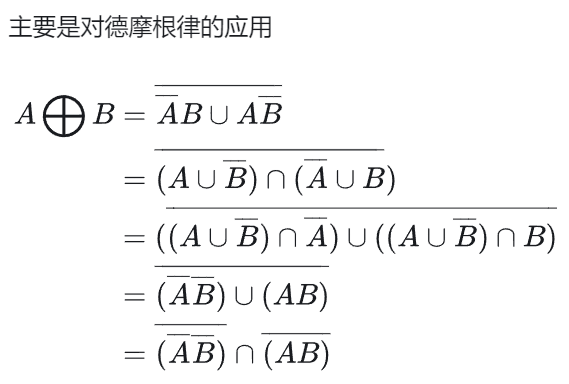
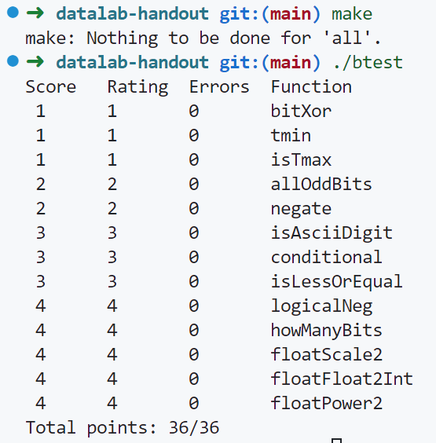

实验主题
Data Lab: Manipulating Bits
关于怎么表示、存储、计算信息
运行环境
只需要linux环境就行, 我用的是WSL2 + Ubuntu 22.04.4 LTS
学习和实验材料
[1] 九曲阑干的视频(有点类似3blue1brown的风格)
[2] 官方文档(其余材料均可在官网获得)
实验过程
本实验是由一个个小的puzzle组成, 这些puzzle是关于操纵位的, 即计算机中信息的表示、存储和计算, 在完成这些puzzle时所能做的操作受限, 我的解决方案和puzzle的要求见bit.c文件
下面一个个介绍实验:
-
bitXor
题目描述
1 2 3 4 5 6 7/* * bitXor - x^y using only ~ and & * Example: bitXor(4, 5) = 1 * Legal ops: ~ & * Max ops: 14 * Rating: 1 */思路
只能用&和~来模拟实现^
此处由布尔代数，其实本来直接(~a & b) | (a & ~b)即可, 但是此处不许用|, 所以再利用a | b = ~(~a & ~b), 可得最终公式为:~(~(x & (~y)) & ~(y & (~x)))
其实有点复杂了, 可供参考的一种更好的解决方式是 -
tmin
题目描述
1 2 3 4 5 6/* * tmin - return minimum two's complement integer * Legal ops: ! ~ & ^ | + << >> * Max ops: 4 * Rating: 1 */思路
找到最小的补码值, 即10…0, 用移位操作可得
1 << 31 -
isTmax
题目描述
1 2 3 4 5 6 7/* * isTmax - returns 1 if x is the maximum, two's complement number, * and 0 otherwise * Legal ops: ! ~ & ^ | + * Max ops: 10 * Rating: 1 */思路
即判断是不是01…1
我的解决方案是:
x + 1为10…0, x为01…1，相与后取反为00…0，再!其值为1
即flag = !(~((x + 1) ^ x))
但是由于11…1也满足此条件, 所以再利用01…1+1后不为0, 而11…1+1后为0, 排除掉此情况
即not_minus1 = !!(x + 1)
最后二者相与可得
即flag & not_minus1 -
addOddBits
题目描述
1 2 3 4 5 6 7 8/* * allOddBits - return 1 if all odd-numbered bits in word set to 1 * where bits are numbered from 0 (least significant) to 31 (most significant) * Examples allOddBits(0xFFFFFFFD) = 0, allOddBits(0xAAAAAAAA) = 1 * Legal ops: ! ~ & ^ | + << >> * Max ops: 12 * Rating: 2 */思路
我的解决方案:
将x中每个字节全部提取出来与0b10101010(0xaa)相与, 可得奇数位上情况, 最后再加上0b01010101(0x55), 再+1, 若第8位为1, 即成功1 2 3x = (x >> 24) & (x >> 16) & (x >> 8) & x & 0xaa; x = (x | 0x55) + 1; return (x >> 8); -
negate
题目描述
1 2 3 4 5 6 7/* * negate - return -x * Example: negate(1) = -1. * Legal ops: ! ~ & ^ | + << >> * Max ops: 5 * Rating: 2 */思路
即求补码，直接
~x + 1即可 -
isAsciiDigit
题目描述
1 2 3 4 5 6 7 8 9/* * isAsciiDigit - return 1 if 0x30 <= x <= 0x39 (ASCII codes for characters '0' to '9') * Example: isAsciiDigit(0x35) = 1. * isAsciiDigit(0x3a) = 0. * isAsciiDigit(0x05) = 0. * Legal ops: ! ~ & ^ | + << >> * Max ops: 15 * Rating: 3 */思路
0x30 - 0x39即
0b00110000 - 0b00111001
首先确保为正数，然后检查第4、5位是否为1，最后再用0x39来+上x的补码(即0x39 - x)，如果符号位不变位就搞定1return (~(x >> 31)) & (x >> 4) & (x >> 5) & 1 & (~((0x39 + (~x) + 1) >> 31)); -
conditional
题目描述
1 2 3 4 5 6 7/* * conditional - same as x ? y : z * Example: conditional(2,4,5) = 4 * Legal ops: ! ~ & ^ | + << >> * Max ops: 16 * Rating: 3 */思路
1左移31为10…0，然后右移31为11…1
0左移31为00…0，然后右移31为00…0 使用一个特殊的flag1 2 3 4// flag为全1表示x大于0，为全0表示x<=0 // 用其来&y或z便能达到控制值的效果 int flag = ((!!x) << 31) >> 31; return (flag & y) | ((~flag) & z);此处提一嘴:
a == b等效于!(a^b), 是一个有用的小trick -
isLessOrEqual
题目描述
1 2 3 4 5 6 7/* * isLessOrEqual - if x <= y then return 1, else return 0 * Example: isLessOrEqual(4,5) = 1. * Legal ops: ! ~ & ^ | + << >> * Max ops: 24 * Rating: 3 */思路
逻辑有点复杂，最重要的是要把
x <= y的判断变成x - y <= 0, 然后根据x - y的结果进行讨论1 2 3 4 5 6 7 8 9 10 11 12 13// 将x <= y转换成x - y <= 0, 去观察x - y // x - y有以下几种情况 // x, y同号，不会溢出，直接取决于最终结果是否<=0 // x为负数，y为正数，x - y 如果不溢出则还是负数，如果溢出符号位会变，会变成正数 // x为正数，y为负数，x - y 如果不溢出则还是正数，如果溢出符号位会变，会变成负数 // x <= y有两种情况：1. xy同号且x-y<=0 2. x为负y为正 int x_minux_y = x + (~y) + 1; int x_minux_y_lessOrEqual = (x_minux_y >> 31) | (!x_minux_y & 1); // xy同号 int same_sign = (~((x ^ y) >> 31)) & 1; int x_negative_y_positive = (x >> 31) & (~(y >> 31)) & 1; int res = (same_sign & x_minux_y_lessOrEqual) | x_negative_y_positive; return res; -
logicalNeg
题目描述
1 2 3 4 5 6 7 8/* * logicalNeg - implement the ! operator, using all of * the legal operators except ! * Examples: logicalNeg(3) = 0, logicalNeg(0) = 1 * Legal ops: ~ & ^ | + << >> * Max ops: 12 * Rating: 4 */思路
注意,
!x实际上等效于x == 0
故我们只需要判断其为0即可1 2 3 4 5 6// 破局点：0-1即(0 + (~1 + 1)) 二进制表示为11...1, 符号位会变号 int sign_x = (~(x >> 31) & 1); // 符号位为0 int x_minus_1 = x + (~1 + 1); // 0-1后的值 int sign_x_minus_1 = (x_minus_1 >> 31) & 1; // -1后符号位为1 int zero = sign_x & sign_x_minus_1; return zero;一种可参考的简便写法:
1 2 3 4// ~x+1>>31 , 在x为正数时为1, x为0和负数时为0, 由此可区分正数、负数和0 // 再去区分负数和0, 将上式与x做与运算 // 即 x | (~x+1>>31) , 其值如果为-1 则表示x!=0, 其值为0则表示x==0 return ((x | (~x +1)) >> 31) + 1; -
howManyBits
题目描述
1 2 3 4 5 6 7 8 9 10 11 12/* howManyBits - return the minimum number of bits required to represent x in * two's complement * Examples: howManyBits(12) = 5 * howManyBits(298) = 10 * howManyBits(-5) = 4 * howManyBits(0) = 1 * howManyBits(-1) = 1 * howManyBits(0x80000000) = 32 * Legal ops: ! ~ & ^ | + << >> * Max ops: 90 * Rating: 4 */思路
太难了没想出来, 最后gpt代劳的二分法
1 2 3 4 5 6 7 8 9 10 11 12 13 14 15 16 17 18 19 20 21 22 23 24 25 26 27 28 29// 二分法：5位2进制数可表示0 - 31，最后再+1即可(每次选一半来检查，选有1的那边) int sign, bit16, bit8, bit4, bit2, bit1, bit0; // 获取符号位 sign = x >> 31; // 如果是负数，将其取反 x = (sign & ~x) | (~sign & x); // 二分查找最高位的1 bit16 = !!(x >> 16) << 4; // 检查16位是否有1 若有1则bit16为10000，反之为0 x = x >> bit16; // 如果有，右移16位 bit8 = !!(x >> 8) << 3; // 检查8位是否有1 x = x >> bit8; bit4 = !!(x >> 4) << 2; // 检查4位是否有1 x = x >> bit4; bit2 = !!(x >> 2) << 1; // 检查2位是否有1 x = x >> bit2; bit1 = !!(x >> 1); // 检查次高位是否为1 x = x >> bit1; bit0 = x; // 检查最后一位 // 计算总位数并加上符号位 return bit16 + bit8 + bit4 + bit2 + bit1 + bit0 + 1;没想到还能这样二分
-
floatScale2
题目描述
1 2 3 4 5 6 7 8 9 10 11/* * floatScale2 - Return bit-level equivalent of expression 2*f for * floating point argument f. * Both the argument and result are passed as unsigned int's, but * they are to be interpreted as the bit-level representation of * single-precision floating point values. * When argument is NaN, return argument * Legal ops: Any integer/unsigned operations incl. ||, &&. also if, while * Max ops: 30 * Rating: 4 */思路
浮点数x2, 按照ieee 754的浮点数标准实现即可
1 2 3 4 5 6 7 8 9 10 11 12 13 14 15 16 17 18 19 20unsigned sign = uf >> 31 & 1; unsigned exp = uf >> 23 & 0xff; unsigned frac = uf & 0x7fffff; // 如果exp全为1, 即数为NaN或无穷大, 即x2无意义，直接返回参数 if (exp == 0xff) return uf; // 如果exp全为0，则直接frac左移一位即可 if (!exp) { frac = frac << 1; } else { // 如果exp不全为0，则+1 exp = exp + 1; // 如果exp+1后全为1且frac不为0, 即数为NaN, 直接返回参数 if ((exp == 0xff) && (frac != 0)) return uf; } return (sign << 31) + (exp << 23) + frac; -
floatFloat2Int
题目描述
1 2 3 4 5 6 7 8 9 10 11 12/* * floatFloat2Int - Return bit-level equivalent of expression (int) f * for floating point argument f. * Argument is passed as unsigned int, but * it is to be interpreted as the bit-level representation of a * single-precision floating point value. * Anything out of range (including NaN and infinity) should return * 0x80000000u. * Legal ops: Any integer/unsigned operations incl. ||, &&. also if, while * Max ops: 30 * Rating: 4 */思路
将浮点数转换成int, 实际上即利用浮点数的值的公式进行转换即可
1 2 3 4 5 6 7 8 9 10 11 12 13 14 15 16 17 18 19 20 21 22 23 24 25 26 27 28 29 30 31 32 33 34// 提取各部分 unsigned sign = uf >> 31 & 1; unsigned exp = uf >> 23 & 0xff; unsigned frac = uf & 0x7fffff; int e = -23; // 如果exp全为1, 即数为NaN或无穷大, 返回0x80000000u if (exp == 0xff) return 0x80000000u; // 如果exp全为0，小数部分为0.frac, 判断是否为-0 else if (exp == 0x0) { // 如果为-0 if ((sign == 1) && (!frac)) return 0; else { e = e + exp - 127; } } // 其他情况, exp为1-254之间值，小数部分为1.frac else { e = e + exp - 127; frac = frac | 0x800000; // 将0.frac改成1.frac } // 判断e正负号决定左移右移, 注意e绝对值大于等于32时会有意想不到的效果 if (e <= -32) return 0; else if (e >= 32) return 0x80000000u; else if (e >= 0) frac = frac << e; else frac = frac >> (-e); // -0特殊处理 if ((frac == 0) && (sign == 1)) return 0; // 此时处理出来结果是unsigned，还需要转成int if (sign == 1) return -(frac & 0xffffffff); // 负数取补码 else return frac; // 正数直接取gpt的简单做法:
1 2 3 4 5 6 7 8 9 10 11 12 13 14 15 16 17 18 19int floatFloat2Int(unsigned uf) { int sign = uf >> 31; int exp = ((uf >> 23) & 0xFF) - 127; int frac = (uf & 0x7FFFFF) | 0x800000; // 添加隐含的前导1 // 特殊情况处理 if (exp > 31) return 0x80000000u; // 超出范围或无穷大 if (exp < 0) return 0; // 小于1的数 // 正常情况处理 if (exp > 23) frac <<= (exp - 23); else frac >>= (23 - exp); // 应用符号 if (sign) return -frac; return frac; -
floatPower2
题目描述
1 2 3 4 5 6 7 8 9 10 11 12 13/* * floatPower2 - Return bit-level equivalent of the expression 2.0^x * (2.0 raised to the power x) for any 32-bit integer x. * * The unsigned value that is returned should have the identical bit * representation as the single-precision floating-point number 2.0^x. * If the result is too small to be represented as a denorm, return * 0. If too large, return +INF. * * Legal ops: Any integer/unsigned operations incl. ||, &&. Also if, while * Max ops: 30 * Rating: 4 */思路
1 2 3 4 5 6 7 8// 用浮点数来表示2^x次方，实际上就是操作浮点数的指数部分 if (x + 127 <= 0) return 0; if (x + 127 > 254) return 0x7f800000; // 返回+INF // sign必为0 // frac为0，exp为x + 127 return (x + 127) << 23;
结果
出现以下结果即正确

收获
学到了很多位运算的技巧, 也进一步深化了ieee754的浮点数实现, 原来这才是真正的理解, csapp神课名不虚传! 希望八月份能把它给完结了, 好好补补基础
参考的答案链接
[1] 知乎——周小伦